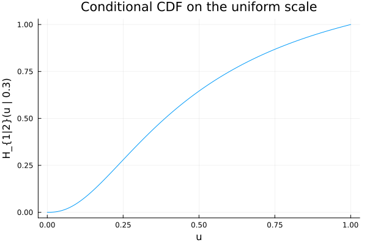
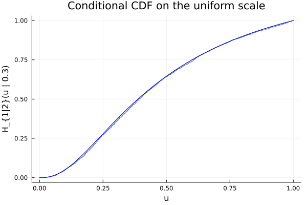
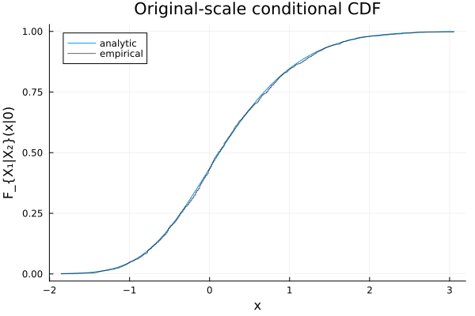
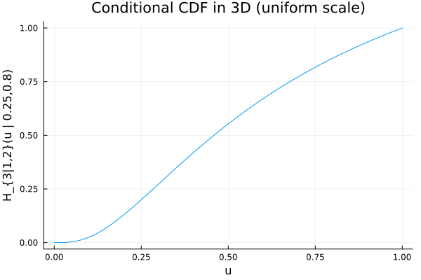
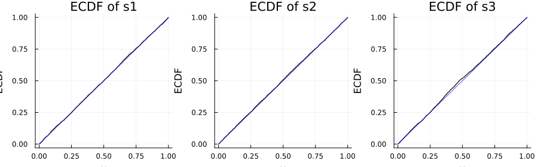

Conditioning and Subsetting
Conditioning
This page introduces conditional distributions under a copula model and shows how to construct them programmatically using condition.
The same interface works either on the uniform scale (copula only) or on the original scale (via SklarDist).
Overview
Given a D-variate copula C (the joint CDF of U ∈ [0,1]^D with uniform marginals), consider a split of the indices into I = setdiff(1:D, J) and J ⊂ {1,…,D} with |J| = p.
- The conditional joint distribution on the uniform scale is the function
\[H_{I\mid J}(\mathbf u_I\mid\mathbf u_J) := \frac{\partial^p C(\mathbf u_I, \mathbf u_J)}{\partial \mathbf u_J} \Big/ \frac{\partial^p C(\mathbf 1_I, \mathbf u_J)}{\partial \mathbf u_J},\]
which is a proper distribution on [0,1]^{|I|}.
- Each conditional marginal (uniform scale) can be expressed as a “distortion”
H_{i|J}(· | u_J) acting on [0,1]:
\[H_{i\mid J}(u\mid\mathbf u_J) := \frac{\partial^p C(\mathbf u^{(i)}(u), \mathbf u_J)}{\partial \mathbf u_J} \Big/ \frac{\partial^p C(\mathbf 1, \mathbf u_J)}{\partial \mathbf u_J},\]
where \mathbf u^{(i)}(u) has coordinate u at index i and 1 elsewhere in I.
- On the original scale for a compound distribution
X = SklarDist(C, (F_1,…,F_D)),
conditioning on values x_J is obtained by mapping to uniforms u_J = (F_j(x_j))_{j∈J} then pushing forward each distortion through the corresponding marginal:
\[F_{X_i\mid X_J}(x\mid \mathbf x_J) = H_{i\mid J}\big(F_i(x)\mid \mathbf u_J\big).\]
The copula of the conditional vector U_I | U_J = u_J is a genuine copula denoted C_{I|J}(·|u_J), which is the copula of H_{I|J}; in the package this is materialized by ConditionalCopula(C, J, u_J) and used internally by condition.
Using condition
condition(C::Copula, js, u_js)returns the conditional distribution on the uniform scale forI = setdiff(1:D, js).- If
length(I) == 1, the result is aDistortionon[0,1]. - Otherwise, it is a
SklarDist(ConditionalCopula, distortions)on[0,1]^{|I|}.
- If
condition(X::SklarDist, js, x_js)returns the conditional distribution on the original scale by pushing forward each distortion through the corresponding marginal.- A specialization
condition(C::Copula{2}, j, u_j)provides a fast path for the common 2D, single-index case.
For best performance, pass js and u_js as NTuples so that p = length(js) is known at compile time.
Example (uniform scale, D = 2)
using Copulas, Distributions
C = ClaytonCopula(2, 1.5)
D = condition(C, 2, 0.3) # distortion for U₁ | U₂ = 0.3
cdf(D, 0.7), quantile(D, 0.9)(0.8325266332715158, 0.800152522598284)Here is the full CDF of this distortion on [0,1]:
using Plots
ts = range(0.0, 1.0; length=401)
plt = plot(ts, cdf.(Ref(D), ts);
xlabel="u", ylabel="H_{1|2}(u | 0.3)",
title="Conditional CDF on the uniform scale",
legend=false)
plt
Overlay the empirical CDF from Monte Carlo sampling via the distortion’s quantile (exact conditional sampling on the uniform scale):
using StatsBase
N = 2000
αs = rand(N)
us = Distributions.quantile.(Ref(D), αs)
ECDF = ecdf(us)
plot!(ts, ECDF.(ts); seriestype=:steppost, label="empirical", alpha=0.6, color=:black)
plot!(ts, cdf.(Ref(D), ts); label="analytic", color=:blue)
plt
Example (original scale via SklarDist)
C = ClaytonCopula(2, 1.5)
X = SklarDist(C, (Normal(), Normal()))
X1_given_X2 = condition(X, 2, 0.0) # distribution of X₁ | X₂ = 0.0
cdf(X1_given_X2, 1.0), quantile(X1_given_X2, 0.95)(0.8472337930319087, 1.5990201973152853)Overlay analytic vs empirical CDF on the original scale:
xs = rand(X1_given_X2, 2000)
Fx = ecdf(xs)
xs_grid = range(quantile(X1_given_X2, 0.001), quantile(X1_given_X2, 0.999); length=401)
plot(xs_grid, Distributions.cdf.(Ref(X1_given_X2), xs_grid);
xlabel="x", ylabel="F_{X₁|X₂}(x|0)", title="Original-scale conditional CDF", label="analytic")
plot!(xs_grid, Fx.(xs_grid); seriestype=:steppost, label="empirical", alpha=0.6, color=:black)
Example (uniform scale, D = 3, |J| = 2)
C = ClaytonCopula(3, 1.2)
H = condition(C, (2, 3), (0.25, 0.8))
cdf(H, [0.4, 0.6])2-element Vector{Float64}:
0.4196690490141152
0.6705888200761846You can also visualize a marginal conditional distortion in a higher-dimensional example. For instance, in 3D, conditioning on two coordinates returns a 1D distortion for the remaining coordinate; we can plot its CDF as well:
C3 = ClaytonCopula(3, 1.2)
D3 = condition(C3, (1, 2), (0.25, 0.8)) # distortion for U₃ | (U₁,U₂) = (0.25,0.8)
ts = range(0.0, 1.0; length=401)
plot(ts, cdf.(Ref(D3), ts);
xlabel="u", ylabel="H_{3|1,2}(u | 0.25,0.8)",
title="Conditional CDF in 3D (uniform scale)",
legend=false)
Overlay with an empirical CDF obtained via the distortion’s quantile:
αs = rand(2000)
u3s = Distributions.quantile.(Ref(D3), αs)
EC3 = ecdf(u3s)
plot!(ts, EC3.(ts); seriestype=:steppost, label="empirical", alpha=0.6, color=:black)Special cases
Independence: distortions are the identity (
u ↦ u) and the conditional copula is independence; conditioning leaves marginals unchanged.Gaussian: if
U = Φ(Z)withZ ~ Normal(0, Σ), thenZ_I | Z_Jis normal with the usual conditional mean/covariance. On the uniform scale this yields a closed-formGaussianDistortion(μ_z, σ_z)for each marginal; on the original scale, applying it toNormal(μ, σ)returnsNormal(μ + σ μ_z, σ σ_z).Archimedean: for generator
ϕandS_J = ∑_{j∈J} ϕ^{-1}(u_j), the uniform-scale distortion for anyi ∉ Jis
\[H_{i\mid J}(u\mid \mathbf u_J) = \frac{\,\,\, ϕ^{(p)}\big(ϕ^{-1}(u) + S_J\big)}{ϕ^{(p)}(S_J)}.\]
This yields a fast-path for Archimedean conditioning without numerical differentiation.
If you find a conditional that should admit a faster closed-form or semi-analytic path but currently falls back to the generic construction, please open an issue, we’ll happily implement it :)
Relation to the conditional copula
The conditional copula C_{I|J}(·|u_J) is the copula of the conditional distribution H_{I|J}(·|u_J). In the implementation it is represented by ConditionalCopula(C, js, u_js) and is used as the copula of the conditional joint when |I| > 1. When condition returns a SklarDist (i.e., |I| > 1), you can access this copula directly via the .C field of the returned object:
H = condition(C, js, u_js) # returns a SklarDist
H.C # the conditional copula
H.m # a Tuple containing the distorded marginals. Implementation
Copulas.condition — Function condition(C::Copula{D}, js, u_js)
condition(X::SklarDist, js, x_js)Construct conditional distributions with respect to a copula, either on the uniform scale (when passing a Copula) or on the original data scale (when passing a SklarDist).
Arguments
C::Copula{D}: D-variate copulaX::SklarDist: joint distribution with copulaX.Cand marginalsX.mjs: indices of conditioned coordinates (tuple, NTuple, or vector)u_js: values in [0,1] forU_js(when conditioning a copula)x_js: values on original scale forX_js(when conditioning a SklarDist)j, u_j, x_j: 1D convenience overloads for the common p = 1 case
Returns
- If the number of remaining coordinates
d = D - length(js)is 1:condition(C, js, u_js)returns aDistortionon [0,1] describingU_i | U_js = u_js.condition(X, js, x_js)returns an unconditional univariate distribution forX_i | X_js = x_js, computed as the push-forwardD(X.m[i])whereD = condition(C, js, u_js)andu_js = cdf.(X.m[js], x_js).
- If
d > 1:condition(C, js, u_js)returns the conditional joint distribution on the uniform scale as aSklarDist(ConditionalCopula, distortions).condition(X, js, x_js)returns the conditional joint distribution on the original scale as aSklarDistwith copulaConditionalCopula(C, js, u_js)and appropriately distorted marginalsD_k(X.m[i_k]).
Notes
- For best performance, pass
jsandu_jsas NTuple to keepp = length(js)known at compile time. The specialized methodcondition(::Copula{2}, j, u_j)exploits this for the commonD = 2, d = 1case. - Specializations are provided for many copula families (Independent, Gaussian, t, Archimedean, several bivariate families). Others fall back to an automatic differentiation based construction.
- This function returns the conditional joint distribution
H_{I|J}(· | u_J). The “conditional copula” isConditionalCopula(C, js, u_js), i.e., the copula of that conditional distribution.
Copulas.Distortion — TypeDistortion <: Distributions.ContinuousUnivariateDistributionAbstract super-type for objects describing the (uniform-scale) conditional marginal transformation Ui | UJ = u_J of a copula.
Subtypes implement cdf/quantile on [0,1]. They are not full arbitrary distributions; they model how a uniform variable is distorted by conditioning. They can be applied as a function to a base marginal distribution to obtain the conditional marginal on the original scale: if D::Distortion and X::UnivariateDistribution, then D(X) is the distribution of X_i | U_J = u_J.
Copulas.DistortionFromCop — TypeDistortionFromCop{TC,p,T} <: DistortionGeneric, uniform-scale conditional marginal transformation for a copula.
This is the default fallback (based on mixed partial derivatives computed via automatic differentiation) used when a faster specialized Distortion is not available for a given copula family.
Parameters
TC: copula typep: length of the conditioned index set J (static)T: element type for the conditioned values u_J
Construction
DistortionFromCop(C::Copula, js::NTuple{p,Int}, ujs::NTuple{p,<:Real}, i::Int)builds the distortion for the conditional marginal of indexigivenU_js = ujs.
Notes
- A convenience method
DistortionFromCop(C, j::Int, uj::Real, i::Int)exists for the commonp = 1case.
Copulas.DistortedDist — TypeDistortedDist{Disto,Distrib} <: Distributions.UnivariateDistributionPush-forward of a base marginal by a Distortion.
Copulas.ConditionalCopula — TypeConditionalCopula{d} <: Copula{d}Copula of the conditioned random vector UI | UJ = u_J.
On top of this main implementation, there are fast-paths for some copulas that are implemented.
See also
condition— reference documentation with all calling syntaxesSklarDist— compound distributions via Sklar’s theoremrosenblatt— sequential transforms (related but different)
Subsetting
Subsetting extracts the dependence structure among a subset of coordinates. Given a copula C of dimension d and an index tuple dims::NTuple{p,Int}, the function subsetdims returns a copula on those p dimensions that preserves the original dependence restricted to dims.
There are two entry points:
subsetdims(C::Copula, dims)returns aCopula{p}(orUniform()whenp == 1).subsetdims(X::SklarDist, dims)returns aSklarDistwith copulasubsetdims(C, dims)and marginals(m[i] for i in dims).
Internally, we materialize subsetting with a small wrapper type SubsetCopula{p}(C, dims) which delegates cdf, pdf, and sampling to the base copula by saturating non-selected coordinates at 1. For many families we provide specialized constructors that return the natural reduced-parameter form instead of a wrapper (e.g., elliptical copulas return the appropriate submatrix, Archimedean keeps the same generator with reduced dimension, etc.).
Usage
using Copulas, Distributions
C = GaussianCopula([1.0 0.6 0.2; 0.6 1.0 0.3; 0.2 0.3 1.0])
S = subsetdims(C, (1,3)) # 2D copula on coordinates 1 and 3
length(S), typeof(S)(2, GaussianCopula{2, Matrix{Float64}})X = SklarDist(C, (Normal(), Normal(1,2), LogNormal()))
X13 = subsetdims(X, (1,3)) # keeps marginals (Normal(), LogNormal()) and reduces the copula
length(X13.C), length(X13.m)(2, 2)What gets returned?
The result depends on the family:
- Elliptical (Gaussian, t): specialized
Copula{p}with correlation matrix equal to thep×psubmatrix of the original; in the t case, degrees of freedom are unchanged for subsetting. - Archimedean: same generator, reduced dimension.
- Independence:
IndependentCopula(p). - Frechet bounds:
MCopula(p); forWCopula(only defined in 2D) you must subset top=2. - Empirical: keeps only the selected rows of the pseudo-observations.
- FGM: builds the reduced parameter vector θ′ consisting of coefficients whose index sets are fully contained in
dims, ordered by increasing order k=2..p and lexicographic within each order, matching the original convention. - Survival: first subsets the base copula, then remaps flip indices to positions within the new coordinate set; flips not in
dimsare dropped.
If no specialization exists, a SubsetCopula wrapper is returned. It’s fully usable and equivalent from an API perspective; specialized forms simply yield better performance and clearer display.
Interactions with conditioning
Subsetting and conditioning commute in the obvious way: conditioning on coordinates J and then extracting a subset of the remaining coordinates is equivalent to subsetting the base copula first and then conditioning on the corresponding indices. In code, if S = subsetdims(C, dims), conditioning on indices js within S is implemented by mapping js to indices in the base copula and delegating to ConditionalCopula(C, ·, ·); the resulting conditional copula of S is either the base conditional copula (when all remaining coordinates are kept) or a further SubsetCopula of it.
Examples
# Archimedean example
C = ClaytonCopula(3, 2.0)
S = subsetdims(C, (1,2)) # still a ClaytonCopula with the same parameter
rand(S, 3) # sample 3 points
cdf(S, [0.7, 0.9])0.6629375642933931# Survival example with flips remapped
base = GaussianCopula([1.0 0.7 0.2; 0.7 1.0 0.1; 0.2 0.1 1.0])
S = SurvivalCopula(base, (2,))
S13 = subsetdims(S, (1,3)) # flip on 2 drops; no flips remain
typeof(S13), S13 isa SurvivalCopula(GaussianCopula{2, Matrix{Float64}}, false)Copulas.subsetdims — Functionsubsetdims(C::Copula, dims::NTuple{p, Int})
subsetdims(D::SklarDist, dims)Return a new copula or Sklar distribution corresponding to the subset of dimensions specified by dims.
Arguments
C::Copula: The original copula object.D::SklarDist: The original Sklar distribution.dims::NTuple{p, Int}: Tuple of indices representing the dimensions to keep.
Returns
- A
SubsetCopulaor a newSklarDistobject corresponding to the selected dimensions. Ifp == 1, returns aUniformdistribution or the corresponding marginal.
Details
This function extracts the dependence structure among the specified dimensions from the original copula or Sklar distribution. Specialized methods exist for some copula types to ensure efficiency and correctness.
Copulas.SubsetCopula — TypeSubsetCopula{d,CT}Fields:
C::CT- The copuladims::Tuple{Int}- a Tuple representing which dimensions are used.
Constructor
SubsetCopula(C::Copula,dims)This class allows to construct a random vector corresponding to a few dimensions of the starting copula. If $(X_1,...,X_n)$ is the random vector corresponding to the copula C, this returns the copula of ( $X_i$ for i in dims). The dependence structure is preserved. There are specialized methods for some copulas.
Rosenblatt transformations
Definition and usefulness
The Rosenblatt transformation considers a random vector $X$ distributed according to a certain multivariate cumulative distribution function $F_{X}(x)$, and maps it back to a uniform distribution on the unit hypercube.
More formally, consider the map $R_X(x)$ defined as follows:
\[R_X(x_1, ..., x_d) = (r_1 = F_{X_1}(x_1), r_2 = F_{X_2 | X_1}(x_2 | x_1), ..., r_{d} = F_{X_d | X_1, ..., X_{d-1}}(x_d | x_1, ..., x_{d-1}))\]
References:
- [19] Rosenblatt, M. (1952). Remarks on a multivariate transformation. Annals of Mathematical Statistics, 23(3), 470-472.
- [4] Joe, H. (2014). Dependence Modeling with Copulas. CRC Press. (Section 2.10)
- [18] McNeil, A. J., & Nešlehová, J. (2009). Multivariate Archimedean copulas, d-monotone functions and ℓ 1-norm symmetric distributions.
In certain circumstances, in particular for Archimedean copulas, this map simplifies to tractable expressions. It has a few nice properties:
- $R_X(X) \sim \texttt{Uniform(Unit Hypercube)}$
- $R_X$ is a bijection.
These two properties are leveraged in some cases to construct the inverse Rosenblatt transformations, which map random noise to proper samples from the copula. In some cases, this is the best sampling algorithm available.
Implementation
As soon as the random vector $X$ is represented by an object X that subtypes SklarDist or Copula, you have access to the rosenblatt(X, x) and inverse_rosenblatt(X, x) operators, which both have a straightforward interpretation from their names.
Copulas.rosenblatt — Functionrosenblatt(C::Copula, u)Computes the rosenblatt transform associated to the copula C on the vector u. Formally, assuming that U ∼ C, the result should be uniformely distributed on the unit hypercube. The importance of this transofrmation comes from its bijectivity: inverse_rosenblatt(C, rand(d)) is equivalent to rand(C). The interface proposes faster versions for matrix inputs u.
Generic Rosenblatt transform using conditional distortions: S₁ = U₁, Sk = H{k|1:(k-1)}(Uk | U₁:U{k-1}). Specialized families may provide faster overrides.
- [19] Rosenblatt, M. (1952). Remarks on a multivariate transformation. Annals of Mathematical Statistics, 23(3), 470-472.
- [4] Joe, H. (2014). Dependence Modeling with Copulas. CRC Press. (Section 2.10)
- [18] McNeil, A. J., & Nešlehová, J. (2009). Multivariate Archimedean copulas, d-monotone functions and ℓ 1-norm symmetric distributions.
Copulas.inverse_rosenblatt — Functioninverse_rosenblatt(C::Copula, u)Computes the inverse rosenblatt transform associated to the copula C on the vector u. Formally, assuming that U ∼ Π, the independence copula, the result should be distributed as C. Also look at rosenblatt(C, u) for the inverse transformation. The interface proposes faster versions for matrix inputs u.
Generic inverse Rosenblatt using conditional distortions: U₁ = S₁, Uk = H{k|1:(k-1)}^{-1}(Sk | U₁:U{k-1}). Specialized families may provide faster overrides.
References:
- [19] Rosenblatt, M. (1952). Remarks on a multivariate transformation. Annals of Mathematical Statistics, 23(3), 470-472.
- [4] Joe, H. (2014). Dependence Modeling with Copulas. CRC Press. (Section 2.10)
- [18] McNeil, A. J., & Nešlehová, J. (2009). Multivariate Archimedean copulas, d-monotone functions and ℓ 1-norm symmetric distributions.
Once again, since the rosenblatt transform leverages the conditioning mechanisme, some fast-paths might be missing in the implementation.
Sanity check plot
You can validate that the Rosenblatt transform maps samples to independent uniforms by checking the marginal ECDFs against the 45° line.
using Copulas, Plots, StatsBase
# pick a nontrivial copula
C = ClaytonCopula(3, 1.5)
# draw samples and apply Rosenblatt transform coordinate-wise
U = rand(C, 3000) # size (3, N)
S = reduce(hcat, (rosenblatt(C, U[:, i]) for i in 1:size(U, 2))) # size (3, N)
ts = range(0.0, 1.0; length=401)
layout = @layout [a b c]
plt = plot(layout=layout, size=(900, 280), legend=false)
for k in 1:3
Ek = ecdf(S[k, :])
plot!(plt[k], ts, Ek.(ts); seriestype=:steppost, color=:black,
title="ECDF of s$(k)", xlabel="u", ylabel="ECDF")
plot!(plt[k], ts, ts; color=:blue, alpha=0.7)
end
plt
- [4]
- H. Joe. Dependence Modeling with Copulas (CRC press, 2014).
- [18]
- A. J. McNeil and J. Nešlehová. Multivariate Archimedean Copulas, d -Monotone Functions and L1 -Norm Symmetric Distributions. The Annals of Statistics 37, 3059–3097 (2009).
- [19]
- M. Rosenblatt. Remarks on a multivariate transformation. Annals of Mathematical Statistics 23, 470–472 (1952).